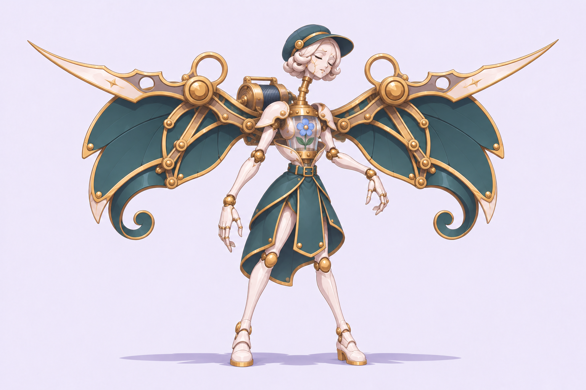

플로라 기어 하드 · 나방 날개 결합 수정안
3번 날개 + 날개당 가위 반쪽 하나씩 + 노멀을 기괴하게 변형한 인형 몸체

- 날개의 청록 패널·금 프레임·아래 말린 끝 유지.
- 상단 갈고리를 5번 가위 반쪽으로 교체. 두 날개에 칼날 두 개.
- 모자·곱슬머리·앞치마·가슴 꽃 유리함과 두 팔·두 다리 유지.
- 긴 목, 기울어진 얼굴, 어긋난 관절과 갑주 틈으로 기괴함 표현.
원본 PNG · 생성 프롬프트 · 제작 기록
사용한 세 참조와 역할